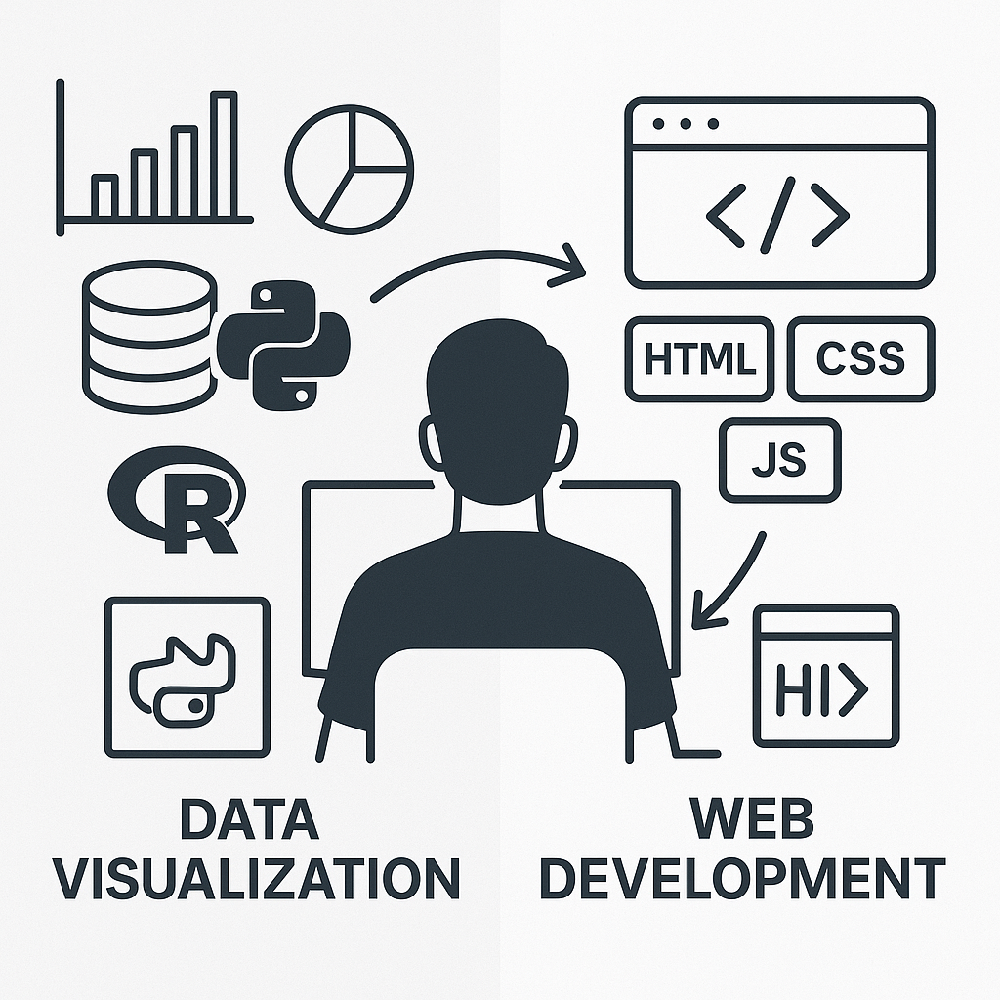
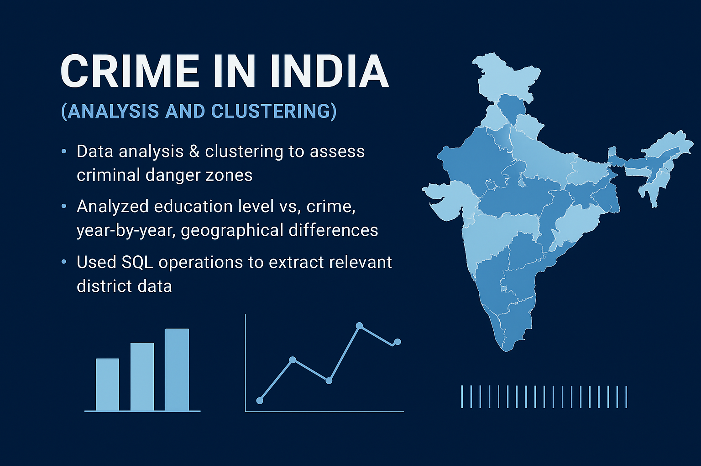
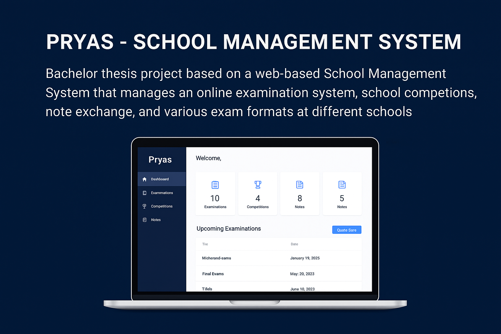
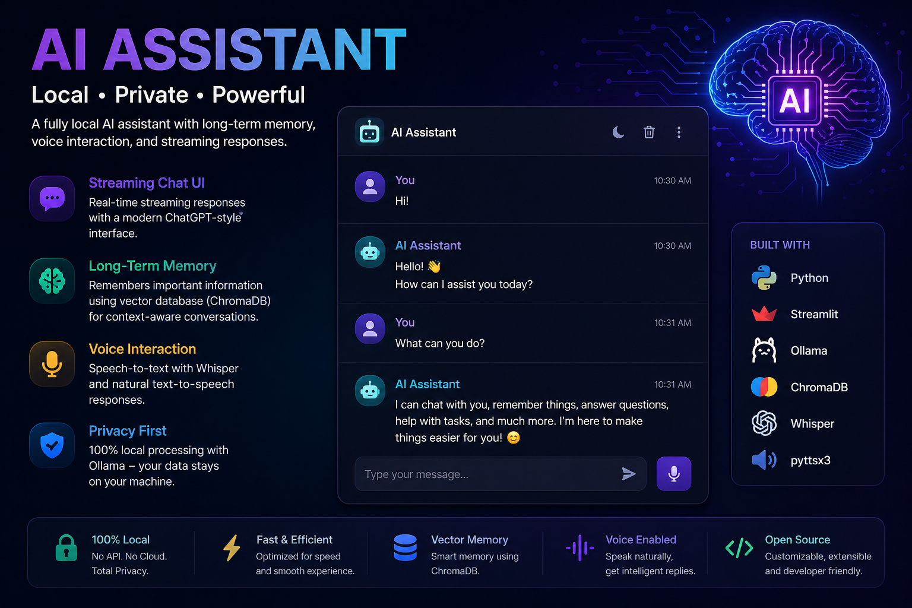
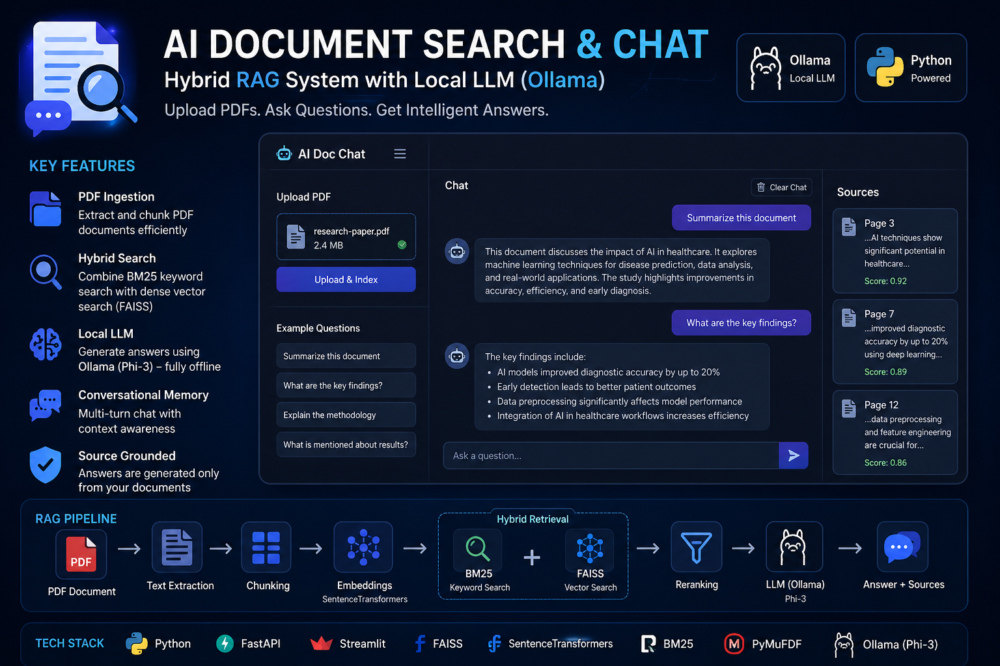
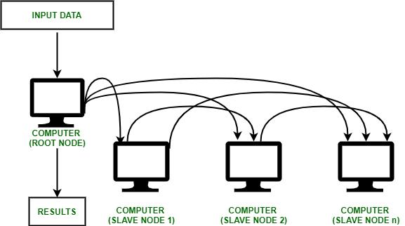
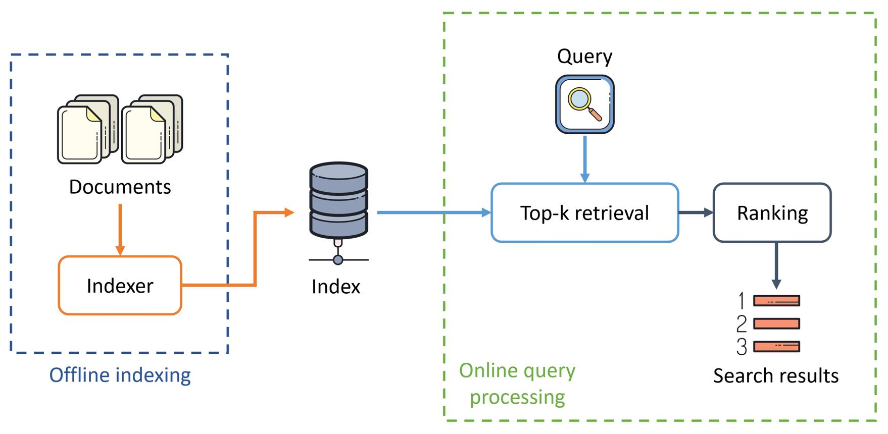

About Me
Data Analyst with 2+ Years of Experience
I'm a Data Analyst with more than 2 years of experience in implementing impactful projects through data mining, statistical analysis, and data visualization. My solid knowledge in Python and SQL enables me to translate complex datasets into actionable insights to support informed decisions.
I have demonstrated ability to improve user engagement and project outcomes through innovative solutions and careful planning. Skilled in using tools like Tableau to present data-based relationships for strategic growth and operational efficiency.

Work Experience
Sr. Project Technical Assistant
Nov 2021 - Jun 2024Supported the creation of technical documentation and ensured compliance with project specifications. Maintained and managed project schedules with project management software for timely delivery and improved user experience.
- Collaborated with technical teams for accurate and timely results and to increase customer satisfaction.
- Identified and mitigated project risks through appropriate strategies.
- Applied data analysis techniques to track user behavior and improve user interface.
- Developed new features through web research and innovative web techniques.
Data Science Intern (Remote)
Dec 2022 - Jun 2023Applied SQL, Python and data analysis in various projects. Used Beautiful Soup for web scraping and data collection from online sources.
- Preprocessed data with Pandas and generated new features.
- Automated data processes with NumPy and Pandas.
- Improved Tableau analyses through self-study in Python, R, and SQL.
- Developed data models to analyze complex datasets.
- Optimized ML models to improve prediction accuracy.
Education
Masters Data Science
XU Exponential University of Applied Science, Potsdam, Germany October 2025 - September 2027Start of the Master's program from October 2025.
Intensive German Language Course (A1 to C1)
Acrolect International Sprachschule | Germany Dec 2024 - PresentFull-time intensive German course. Currently at B2 level with focus on professional language skills.
Bachelor of Technology
Dr. A.P.J. Abdul Kalam Technical University | Lucknow, India Aug 2017 - Sep 2021Graduated with 1st Division in Computer Science and Engineering.
High School
St. John's Senior Secondary School | Meerut, India Mar 2014 - Apr 2017Completed secondary and upper secondary education with focus on science and mathematics.
Projects

Crime in India (Analysis and Clustering)
Data analysis and clustering to assess criminal danger zones. Analyzed education level vs. crime, yearly patterns, and geographical differences using SQL and Python.

Pryas - School Management System
Bachelor thesis project based on a web-based School Management System for online examinations, school competitions, note exchange, and multiple exam formats.

AI Assistant with Long-Term Memory, Voice & Streaming Chat UI
A fully local AI assistant with persistent memory, voice interaction, and ChatGPT-style streaming interface using open-source LLMs.

AI Document Search & Chat (Hybrid RAG System)
End-to-end Retrieval-Augmented Generation system allowing users to upload PDFs and interact with them using natural language chat.

Multi-Node Distributed File Scanning System (C++ & MPI)
Distributed-memory parallel system using MPI and C++ multithreading to scan and analyze files across multiple nodes with hashing and task distribution.

Offline Information Retrieval (IR) & Search System
Complete IR pipeline with TF-IDF indexing, Vector Space Model, cosine similarity, Flask search interface, and Precision@K evaluation.
Certificates
BCG Data Science Job Simulation
Forage | July 2025 July 2025Conducted a customer churn analysis simulation, identified key customer data, and developed a strategic investigation approach using Python.
Quantium Data Analytics Job Simulation
Forage | May 2025 May 2025Completed a practical simulation focused on customer analytics, data preparation, and commercial insights.
PG Program in Data Science
Datatrained | Noida, India Aug 2022 - Sep 2023Certificates in Python, Data Wrangling, Data Visualization, SQL, and Applied Statistics.
Deloitte Australia Data Analytics Job Simulation
Forage | May 2026 May 2026Created an interactive Tableau dashboard and used Excel to classify data, analyze equality metrics, and draw business conclusions.
Electronic Arts Software Engineering Virtual Experience Program
Forage | May 2026 May 2026Proposed a feature, built class diagrams, developed C++ class definitions, and optimized inventory functionality.
Lloyds Banking Group Data Science Job Simulation
Forage | May 2026 May 2026Developed customer churn models using machine learning, evaluated model performance, and generated retention insights.
Walmart USA Advanced Software Engineering Virtual Experience Program
Forage | May 2026 May 2026Solved technical challenges involving data structures, UML design, and relational database modeling.
JPMorgan Chase & Co. Quantitative Research Virtual Experience Program
Forage | May 2026 May 2026Built credit risk models, estimated probability of default, and converted FICO scores into rating buckets.
Contact Me
Get in Touch
anshulsharma.de@gmail.com
Phone
+49 15212596460
Location
Berlin, Germany